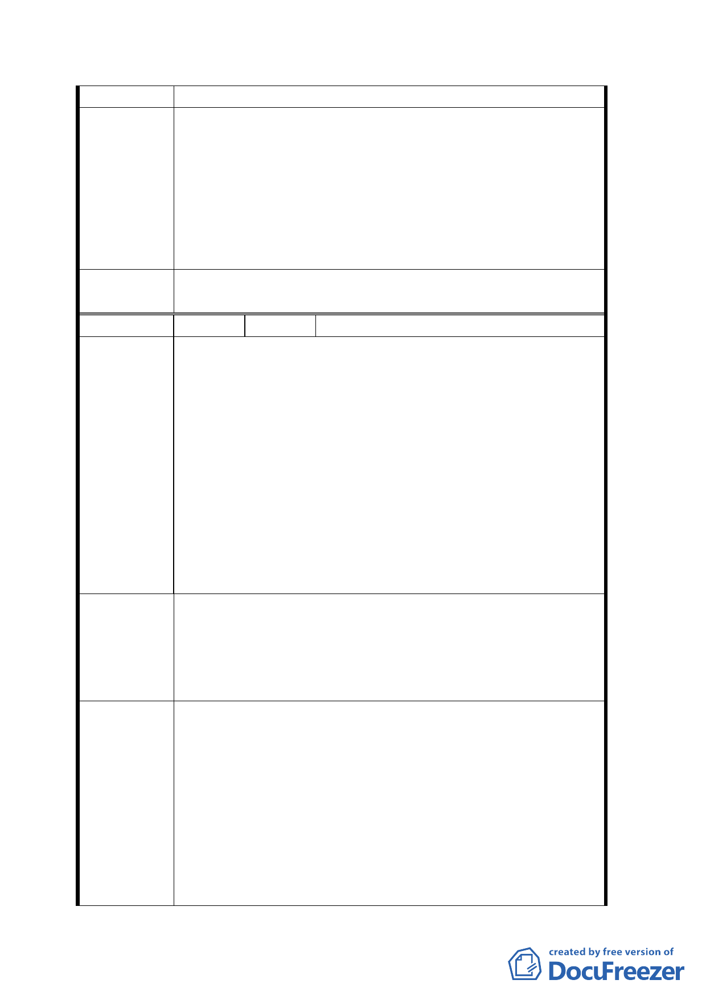

憩區。
93.11.11 專案小組會議結論：
原則同意發展局所提方案，惟請對周邊土地坡度 30%以
專 案 小 組 下部分再予檢視，必要時予以納入，微調計畫範圍。
結 論 94.4.14 專案小組會議結論：
1.住宅區及商業區範圍同意發展局所提方案及修正範
圍。
2.留供市府參考。
委員會決
議
同意依專案小組 94.4.14 審查結論辦理。
編 號 ３ 陳情人 周信良等六人
1.關於台北市文山區木柵路五段附近地區之都市計畫案，
將景美溪右岸萬福橋西側之堤防線外行水區用地，納入
都市計畫案之徵收範圍內。但景美溪右岸萬福橋東側之
堤防線外行水區用地，卻未納入此計畫案中。
2.一般堤防線外行水區用地，主要為築堤及疏導河川水流
陳情理由
之用，以有效防止因風災或豪大雨所帶來的災害，實為
保護人民生命財產安全之公用，其業務應屬台北市養工
處之管轄範圍。
3.然此計畫案卻將西側堤防線外之行水區用地納入徵收範
圍，有違前項說明之功用，且影響此次計畫案之土地徵
收面積，對附近居民百姓並無實質之效益，且嚴重影響
並侵犯到土地所有人之利益。
惠請以能維護百姓生計及社稷利益為前題，秉持公平客觀
原則，重新考量並評估，關於景美溪右岸萬福橋西側之堤
建 議 辦 法 防線外行水區用地之徵收一案，是否為必要徵收，能否廢
除徵收進而擴大對鄰地之徵收，以維護國家造福百姓之福
祉為宗旨。
93.11.11 專案小組會議結論：
原則同意發展局所提方案，惟請對周邊土地坡度 30%以
下部分再予檢視，必要時予以納入，微調計畫範圍。本
專案小組
結論
案景美溪右岸土地係配合經濟部恢復 82 年堤線所產生
之新生地，已不再是河川區範圍，故併同鄰近平坦保護
區一併檢討變更，至變更為河川區部分，本府養工處亦
將進行開挖、疏濬工程。
94.4.14 專案小組會議結論：
同意發展局所提方案、範圍，有關河川區徵收由市府另
六